规定初始像素覆盖已通过独立数据验收，完整12步与物理安全未通过。Prescribed initial pixel coverage passes the independent DATA audit; full12-step and physical acceptance remain incomplete. Original1280×720; no edits/crop. Every image below is INITIAL, not micro1/final.
{"seed": 0, "proposal_id": 2319, "global_id": 8463, "family": 3}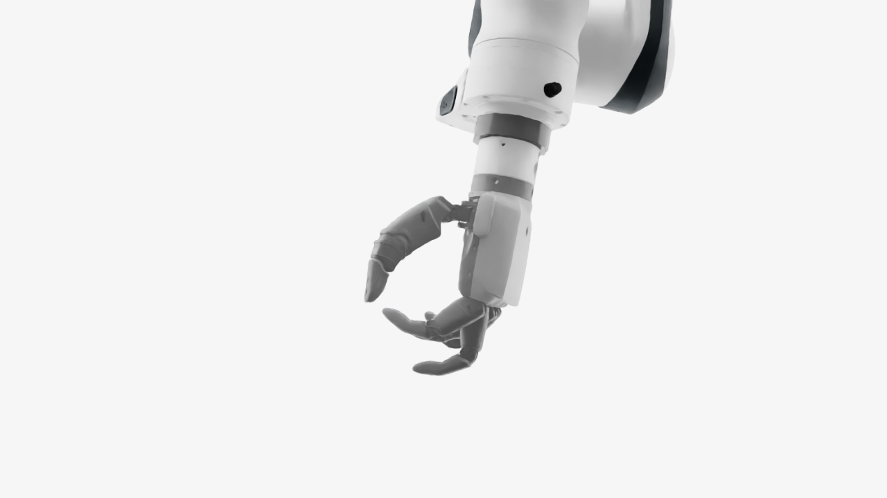
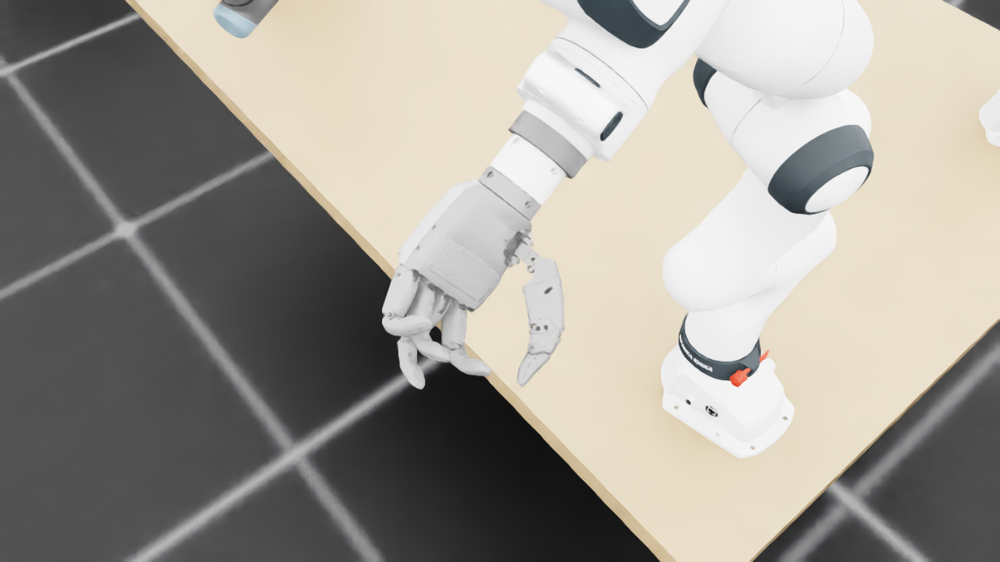
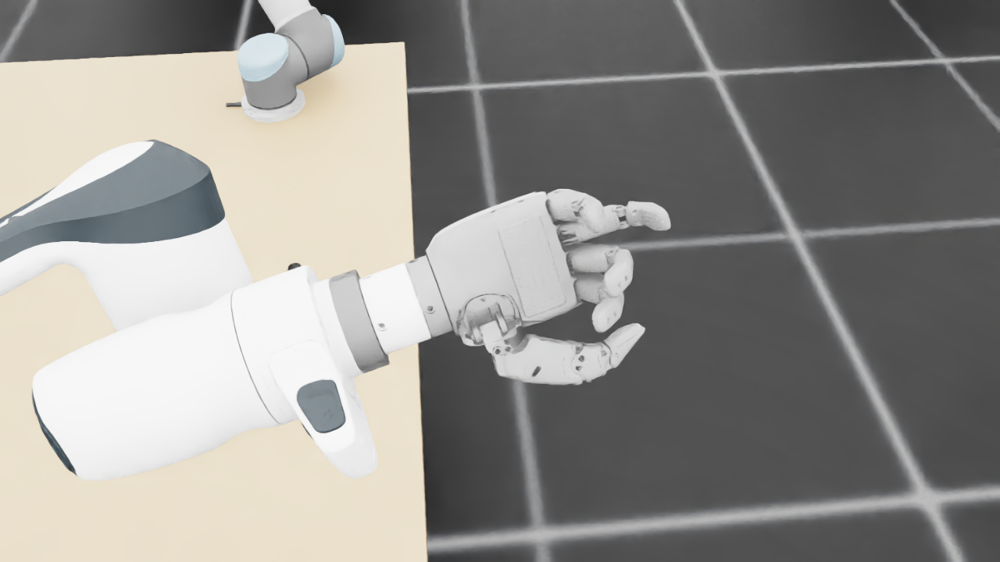
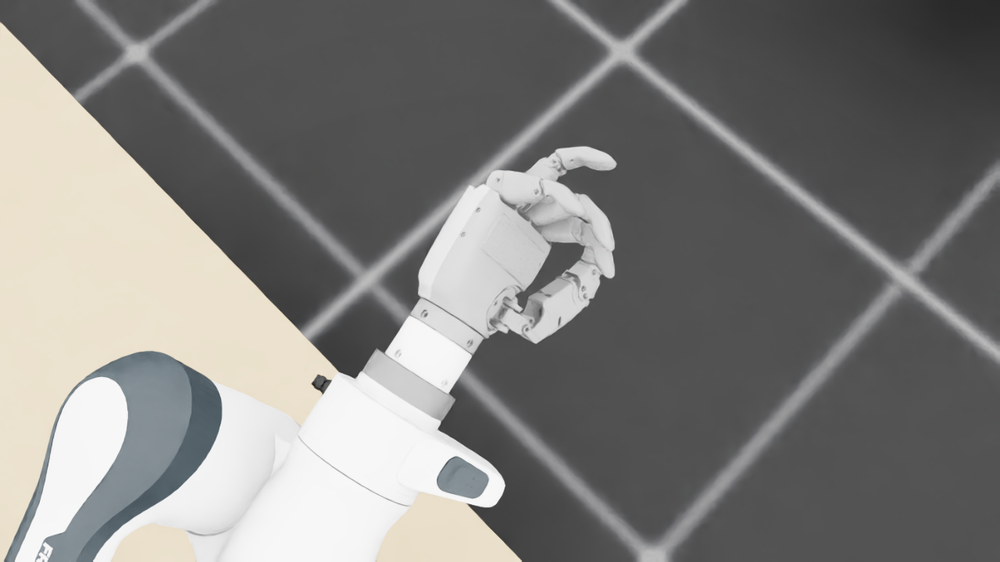
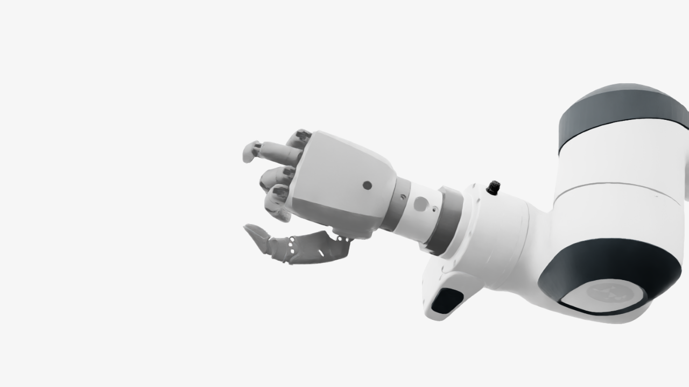
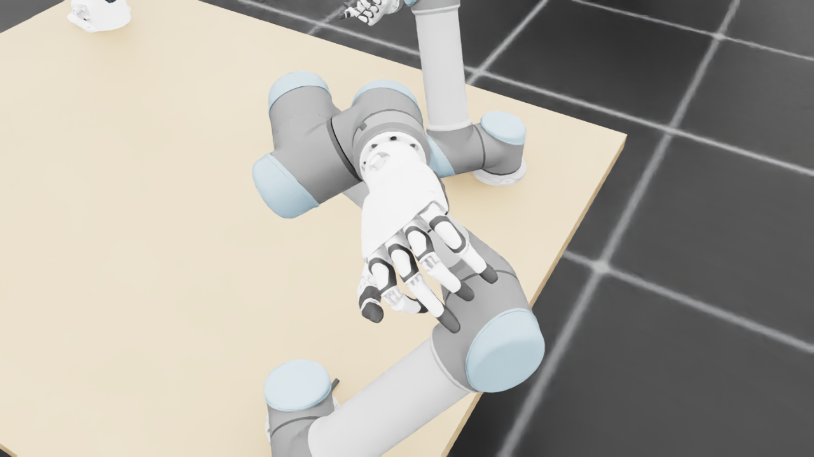
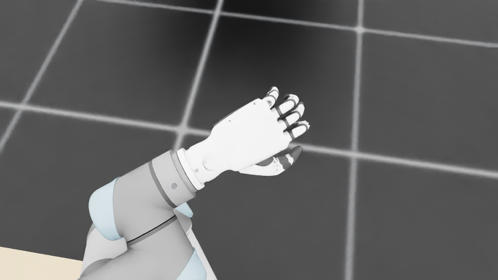
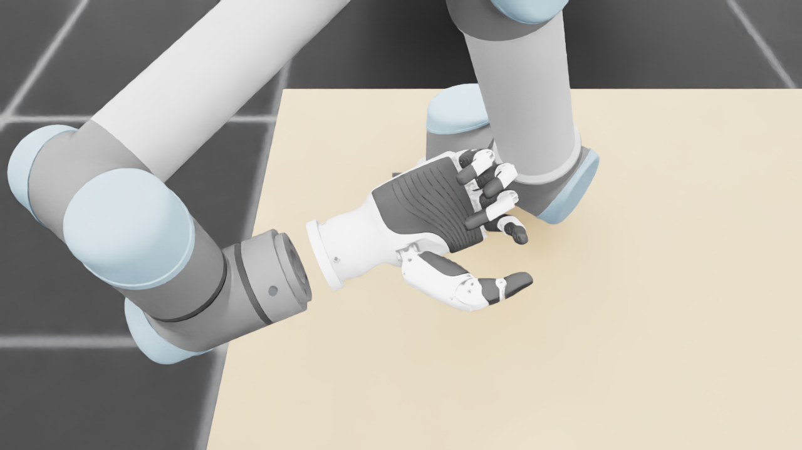
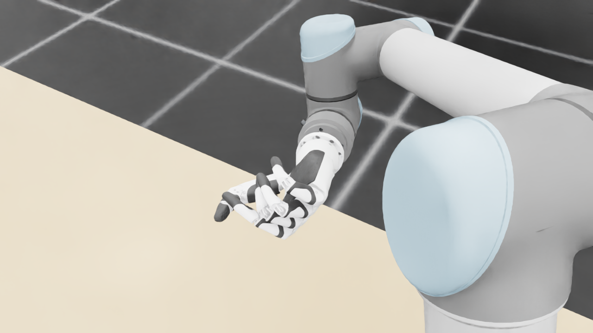
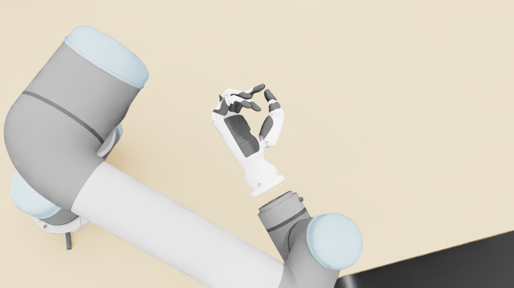
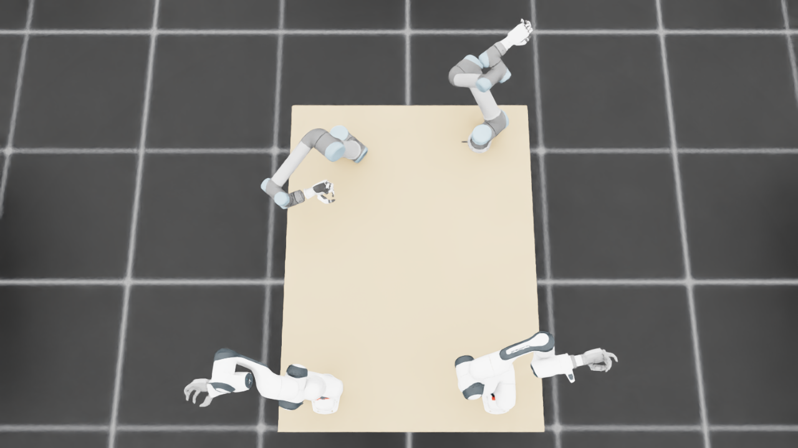
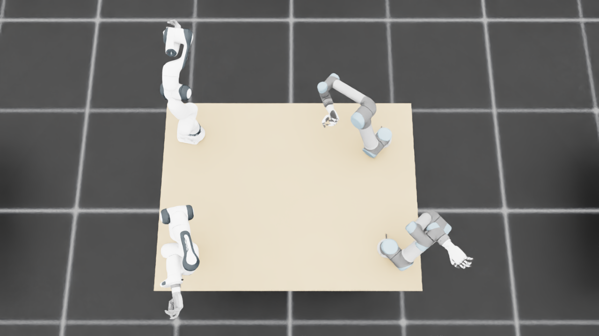
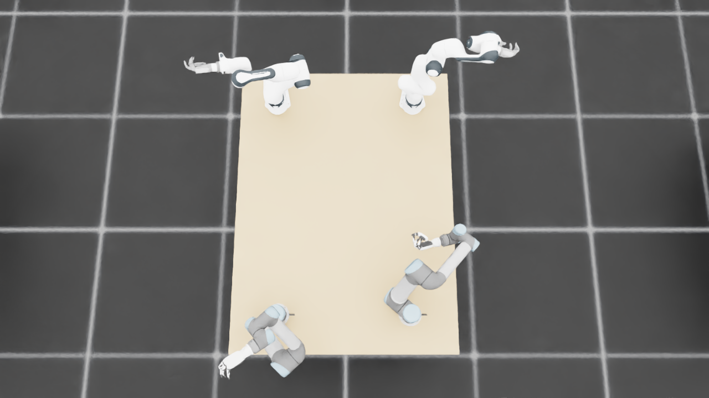
{
"qualified": true,
"arms": {
"F_L": {
"qualified": true,
"palm_visual_peak_pixels": 21447,
"finger_family_peak_pixels": {
"thumb": 8761,
"index": 4504,
"middle": 3547,
"ring": 2185,
"little": 3429
},
"per_native_body_peak_pixels": {
"/World/envs/env_7/F_L/f2_hand/left_hand_base": 26254,
"/World/envs/env_7/F_L/f2_hand/left_index_1": 2832,
"/World/envs/env_7/F_L/f2_hand/left_middle_1": 2034,
"/World/envs/env_7/F_L/f2_hand/left_pinky_1": 2055,
"/World/envs/env_7/F_L/f2_hand/left_ring_1": 1078,
"/World/envs/env_7/F_L/f2_hand/left_thumb_1": 712,
"/World/envs/env_7/F_L/f2_hand/left_index_2": 1672,
"/World/envs/env_7/F_L/f2_hand/left_middle_2": 1879,
"/World/envs/env_7/F_L/f2_hand/left_pinky_2": 1374,
"/World/envs/env_7/F_L/f2_hand/left_ring_2": 1107,
"/World/envs/env_7/F_L/f2_hand/left_thumb_2": 4448,
"/World/envs/env_7/F_L/f2_hand/left_thumb_3": 1979,
"/World/envs/env_7/F_L/f2_hand/left_thumb_4": 1622
},
"native_body_visibility_gaps": [],
"all_native_hand_bodies_observed": true,
"full_mesh_coverage_certified": false,
"all_recorded_attempt_peak": {
"qualified": true,
"palm_visual_peak_pixels": 25144,
"finger_family_peak_pixels": {
"thumb": 8761,
"index": 4504,
"middle": 3547,
"ring": 2185,
"little": 3429
},
"per_native_body_peak_pixels": {
"/World/envs/env_7/F_L/f2_hand/left_hand_base": 30388,
"/World/envs/env_7/F_L/f2_hand/left_index_1": 2832,
"/World/envs/env_7/F_L/f2_hand/left_middle_1": 2063,
"/World/envs/env_7/F_L/f2_hand/left_pinky_1": 2055,
"/World/envs/env_7/F_L/f2_hand/left_ring_1": 1278,
"/World/envs/env_7/F_L/f2_hand/left_thumb_1": 712,
"/World/envs/env_7/F_L/f2_hand/left_index_2": 1672,
"/World/envs/env_7/F_L/f2_hand/left_middle_2": 1879,
"/World/envs/env_7/F_L/f2_hand/left_pinky_2": 1374,
"/World/envs/env_7/F_L/f2_hand/left_ring_2": 1107,
"/World/envs/env_7/F_L/f2_hand/left_thumb_2": 4448,
"/World/envs/env_7/F_L/f2_hand/left_thumb_3": 1979,
"/World/envs/env_7/F_L/f2_hand/left_thumb_4": 1622
},
"native_body_visibility_gaps": [],
"all_native_hand_bodies_observed": true,
"full_mesh_coverage_certified": false,
"qualification": false
},
"attempts": 4,
"decoded": 4
},
"F_R": {
"qualified": true,
"palm_visual_peak_pixels": 32809,
"finger_family_peak_pixels": {
"thumb": 9983,
"index": 2753,
"middle": 3697,
"ring": 3658,
"little": 4013
},
"per_native_body_peak_pixels": {
"/World/envs/env_7/F_R/f2_hand/right_hand_base": 39352,
"/World/envs/env_7/F_R/f2_hand/right_index_1": 1431,
"/World/envs/env_7/F_R/f2_hand/right_middle_1": 1987,
"/World/envs/env_7/F_R/f2_hand/right_pinky_1": 2468,
"/World/envs/env_7/F_R/f2_hand/right_ring_1": 2632,
"/World/envs/env_7/F_R/f2_hand/right_thumb_1": 1024,
"/World/envs/env_7/F_R/f2_hand/right_index_2": 1451,
"/World/envs/env_7/F_R/f2_hand/right_middle_2": 1710,
"/World/envs/env_7/F_R/f2_hand/right_pinky_2": 1545,
"/World/envs/env_7/F_R/f2_hand/right_ring_2": 1921,
"/World/envs/env_7/F_R/f2_hand/right_thumb_2": 5437,
"/World/envs/env_7/F_R/f2_hand/right_thumb_3": 1878,
"/World/envs/env_7/F_R/f2_hand/right_thumb_4": 1696
},
"native_body_visibility_gaps": [],
"all_native_hand_bodies_observed": true,
"full_mesh_coverage_certified": false,
"all_recorded_attempt_peak": {
"qualified": false,
"palm_visual_peak_pixels": 32809,
"finger_family_peak_pixels": {
"thumb": 10074,
"index": 2753,
"middle": 3697,
"ring": 3658,
"little": 4013
},
"per_native_body_peak_pixels": {
"/World/envs/env_7/F_R/f2_hand/right_hand_base": 39352,
"/World/envs/env_7/F_R/f2_hand/right_index_1": 1431,
"/World/envs/env_7/F_R/f2_hand/right_middle_1": 1987,
"/World/envs/env_7/F_R/f2_hand/right_pinky_1": 2468,
"/World/envs/env_7/F_R/f2_hand/right_ring_1": 2632,
"/World/envs/env_7/F_R/f2_hand/right_thumb_1": 1024,
"/World/envs/env_7/F_R/f2_hand/right_index_2": 1591,
"/World/envs/env_7/F_R/f2_hand/right_middle_2": 1710,
"/World/envs/env_7/F_R/f2_hand/right_pinky_2": 1545,
"/World/envs/env_7/F_R/f2_hand/right_ring_2": 1921,
"/World/envs/env_7/F_R/f2_hand/right_thumb_2": 5609,
"/World/envs/env_7/F_R/f2_hand/right_thumb_3": 2002,
"/World/envs/env_7/F_R/f2_hand/right_thumb_4": 1719
},
"native_body_visibility_gaps": [],
"all_native_hand_bodies_observed": true,
"full_mesh_coverage_certified": false,
"qualification": false
},
"attempts": 4,
"decoded": 4
},
"U_L": {
"qualified": true,
"palm_visual_peak_pixels": 15112,
"finger_family_peak_pixels": {
"thumb": 11068,
"index": 3845,
"middle": 4974,
"ring": 4352,
"little": 4152
},
"per_native_body_peak_pixels": {
"/World/envs/env_7/U_L/wrist_3_link": 43740,
"/World/envs/env_7/U_L/left_index_1": 2445,
"/World/envs/env_7/U_L/left_little_1": 2607,
"/World/envs/env_7/U_L/left_middle_1": 2470,
"/World/envs/env_7/U_L/left_ring_1": 2197,
"/World/envs/env_7/U_L/left_thumb_1": 352,
"/World/envs/env_7/U_L/left_index_2": 1400,
"/World/envs/env_7/U_L/left_little_2": 1545,
"/World/envs/env_7/U_L/left_middle_2": 2504,
"/World/envs/env_7/U_L/left_ring_2": 2155,
"/World/envs/env_7/U_L/left_thumb_2": 6419,
"/World/envs/env_7/U_L/left_thumb_3": 2982,
"/World/envs/env_7/U_L/left_thumb_4": 1315
},
"native_body_visibility_gaps": [],
"all_native_hand_bodies_observed": true,
"full_mesh_coverage_certified": false,
"all_recorded_attempt_peak": {
"qualified": false,
"palm_visual_peak_pixels": 17433,
"finger_family_peak_pixels": {
"thumb": 11274,
"index": 4673,
"middle": 4974,
"ring": 4352,
"little": 4924
},
"per_native_body_peak_pixels": {
"/World/envs/env_7/U_L/wrist_3_link": 52153,
"/World/envs/env_7/U_L/left_index_1": 2962,
"/World/envs/env_7/U_L/left_little_1": 2913,
"/World/envs/env_7/U_L/left_middle_1": 2470,
"/World/envs/env_7/U_L/left_ring_1": 2197,
"/World/envs/env_7/U_L/left_thumb_1": 746,
"/World/envs/env_7/U_L/left_index_2": 1887,
"/World/envs/env_7/U_L/left_little_2": 2011,
"/World/envs/env_7/U_L/left_middle_2": 2504,
"/World/envs/env_7/U_L/left_ring_2": 2155,
"/World/envs/env_7/U_L/left_thumb_2": 6487,
"/World/envs/env_7/U_L/left_thumb_3": 3293,
"/World/envs/env_7/U_L/left_thumb_4": 1477
},
"native_body_visibility_gaps": [],
"all_native_hand_bodies_observed": true,
"full_mesh_coverage_certified": false,
"qualification": false
},
"attempts": 8,
"decoded": 8
},
"U_R": {
"qualified": true,
"palm_visual_peak_pixels": 15822,
"finger_family_peak_pixels": {
"thumb": 11082,
"index": 4105,
"middle": 3100,
"ring": 4618,
"little": 4426
},
"per_native_body_peak_pixels": {
"/World/envs/env_7/U_R/wrist_3_link": 43850,
"/World/envs/env_7/U_R/right_index_1": 1900,
"/World/envs/env_7/U_R/right_little_1": 2790,
"/World/envs/env_7/U_R/right_middle_1": 1770,
"/World/envs/env_7/U_R/right_ring_1": 2308,
"/World/envs/env_7/U_R/right_thumb_1": 349,
"/World/envs/env_7/U_R/right_index_2": 2205,
"/World/envs/env_7/U_R/right_little_2": 1636,
"/World/envs/env_7/U_R/right_middle_2": 2119,
"/World/envs/env_7/U_R/right_ring_2": 2310,
"/World/envs/env_7/U_R/right_thumb_2": 6319,
"/World/envs/env_7/U_R/right_thumb_3": 3055,
"/World/envs/env_7/U_R/right_thumb_4": 1359
},
"native_body_visibility_gaps": [],
"all_native_hand_bodies_observed": true,
"full_mesh_coverage_certified": false,
"all_recorded_attempt_peak": {
"qualified": false,
"palm_visual_peak_pixels": 15822,
"finger_family_peak_pixels": {
"thumb": 11082,
"index": 4105,
"middle": 3100,
"ring": 4618,
"little": 4426
},
"per_native_body_peak_pixels": {
"/World/envs/env_7/U_R/wrist_3_link": 43850,
"/World/envs/env_7/U_R/right_index_1": 1900,
"/World/envs/env_7/U_R/right_little_1": 2790,
"/World/envs/env_7/U_R/right_middle_1": 1770,
"/World/envs/env_7/U_R/right_ring_1": 2308,
"/World/envs/env_7/U_R/right_thumb_1": 362,
"/World/envs/env_7/U_R/right_index_2": 2205,
"/World/envs/env_7/U_R/right_little_2": 1636,
"/World/envs/env_7/U_R/right_middle_2": 2119,
"/World/envs/env_7/U_R/right_ring_2": 2310,
"/World/envs/env_7/U_R/right_thumb_2": 6319,
"/World/envs/env_7/U_R/right_thumb_3": 3055,
"/World/envs/env_7/U_R/right_thumb_4": 1359
},
"native_body_visibility_gaps": [],
"all_native_hand_bodies_observed": true,
"full_mesh_coverage_certified": false,
"qualification": false
},
"attempts": 8,
"decoded": 8
}
},
"wide": {
"qualified": true,
"per_native_object_peak_pixels": {
"/World/envs/env_7/F_L/fr3_link0": 1194,
"/World/envs/env_7/F_L/fr3_link1": 1465,
"/World/envs/env_7/F_L/fr3_link2": 1265,
"/World/envs/env_7/F_L/fr3_link3": 1712,
"/World/envs/env_7/F_L/fr3_link4": 2147,
"/World/envs/env_7/F_L/fr3_link5": 3730,
"/World/envs/env_7/F_L/fr3_link6": 1949,
"/World/envs/env_7/F_L/fr3_link7": 292,
"/World/envs/env_7/F_L/fr3_link8": 0,
"/World/envs/env_7/F_L/f2_hand/left_hand_base": 479,
"/World/envs/env_7/F_L/f2_hand/left_index_1": 56,
"/World/envs/env_7/F_L/f2_hand/left_middle_1": 10,
"/World/envs/env_7/F_L/f2_hand/left_pinky_1": 77,
"/World/envs/env_7/F_L/f2_hand/left_ring_1": 55,
"/World/envs/env_7/F_L/f2_hand/left_thumb_1": 3,
"/World/envs/env_7/F_L/f2_hand/left_index_2": 67,
"/World/envs/env_7/F_L/f2_hand/left_middle_2": 7,
"/World/envs/env_7/F_L/f2_hand/left_pinky_2": 53,
"/World/envs/env_7/F_L/f2_hand/left_ring_2": 56,
"/World/envs/env_7/F_L/f2_hand/left_thumb_2": 140,
"/World/envs/env_7/F_L/f2_hand/left_thumb_3": 34,
"/World/envs/env_7/F_L/f2_hand/left_thumb_4": 29,
"/World/envs/env_7/F_R/fr3_link0": 955,
"/World/envs/env_7/F_R/fr3_link1": 1250,
"/World/envs/env_7/F_R/fr3_link2": 1477,
"/World/envs/env_7/F_R/fr3_link3": 873,
"/World/envs/env_7/F_R/fr3_link4": 2466,
"/World/envs/env_7/F_R/fr3_link5": 3353,
"/World/envs/env_7/F_R/fr3_link6": 1498,
"/World/envs/env_7/F_R/fr3_link7": 910,
"/World/envs/env_7/F_R/fr3_link8": 157,
"/World/envs/env_7/F_R/f2_hand/right_hand_base": 916,
"/World/envs/env_7/F_R/f2_hand/right_index_1": 37,
"/World/envs/env_7/F_R/f2_hand/right_middle_1": 36,
"/World/envs/env_7/F_R/f2_hand/right_pinky_1": 105,
"/World/envs/env_7/F_R/f2_hand/right_ring_1": 63,
"/World/envs/env_7/F_R/f2_hand/right_thumb_1": 29,
"/World/envs/env_7/F_R/f2_hand/right_index_2": 42,
"/World/envs/env_7/F_R/f2_hand/right_middle_2": 85,
"/World/envs/env_7/F_R/f2_hand/right_pinky_2": 59,
"/World/envs/env_7/F_R/f2_hand/right_ring_2": 75,
"/World/envs/env_7/F_R/f2_hand/right_thumb_2": 164,
"/World/envs/env_7/F_R/f2_hand/right_thumb_3": 56,
"/World/envs/env_7/F_R/f2_hand/right_thumb_4": 17,
"/World/envs/env_7/U_L/base_link": 336,
"/World/envs/env_7/U_L/shoulder_link": 1312,
"/World/envs/env_7/U_L/upper_arm_link": 3067,
"/World/envs/env_7/U_L/forearm_link": 3136,
"/World/envs/env_7/U_L/wrist_1_link": 967,
"/World/envs/env_7/U_L/wrist_2_link": 1055,
"/World/envs/env_7/U_L/wrist_3_link": 1630,
"/World/envs/env_7/U_L/left_index_1": 79,
"/World/envs/env_7/U_L/left_little_1": 89,
"/World/envs/env_7/U_L/left_middle_1": 84,
"/World/envs/env_7/U_L/left_ring_1": 82,
"/World/envs/env_7/U_L/left_thumb_1": 0,
"/World/envs/env_7/U_L/left_index_2": 18,
"/World/envs/env_7/U_L/left_little_2": 39,
"/World/envs/env_7/U_L/left_middle_2": 44,
"/World/envs/env_7/U_L/left_ring_2": 53,
"/World/envs/env_7/U_L/left_thumb_2": 69,
"/World/envs/env_7/U_L/left_thumb_3": 76,
"/World/envs/env_7/U_L/left_thumb_4": 44,
"/World/envs/env_7/U_R/base_link": 248,
"/World/envs/env_7/U_R/shoulder_link": 1146,
"/World/envs/env_7/U_R/upper_arm_link": 3864,
"/World/envs/env_7/U_R/forearm_link": 3149,
"/World/envs/env_7/U_R/wrist_1_link": 724,
"/World/envs/env_7/U_R/wrist_2_link": 205,
"/World/envs/env_7/U_R/wrist_3_link": 921,
"/World/envs/env_7/U_R/right_index_1": 19,
"/World/envs/env_7/U_R/right_little_1": 61,
"/World/envs/env_7/U_R/right_middle_1": 12,
"/World/envs/env_7/U_R/right_ring_1": 33,
"/World/envs/env_7/U_R/right_thumb_1": 14,
"/World/envs/env_7/U_R/right_index_2": 42,
"/World/envs/env_7/U_R/right_little_2": 41,
"/World/envs/env_7/U_R/right_middle_2": 47,
"/World/envs/env_7/U_R/right_ring_2": 51,
"/World/envs/env_7/U_R/right_thumb_2": 124,
"/World/envs/env_7/U_R/right_thumb_3": 60,
"/World/envs/env_7/U_R/right_thumb_4": 27,
"/World/envs/env_7/TableF": 100662,
"/World/envs/env_7/TableU": 99079
},
"arm_peak_pixels": {
"F_L": 13000,
"F_R": 13668,
"U_L": 10980,
"U_R": 10324
},
"table_peak_pixels": {
"TableF": 100662,
"TableU": 99079
},
"critical_body_peak_pixels": {
"/World/envs/env_7/U_L/forearm_link": 3136,
"/World/envs/env_7/U_L/wrist_2_link": 1055,
"/World/envs/env_7/U_R/forearm_link": 3149,
"/World/envs/env_7/U_R/wrist_2_link": 205
}
},
"raw_attempt_count": 37,
"PNG_count": 37,
"angle_records": 37,
"max_actual_angle_identity_error_deg": 0.0,
"held_snapshot_checks": 2432,
"universal_visibility_impossible": false,
"full_mesh_coverage_certified": false
}